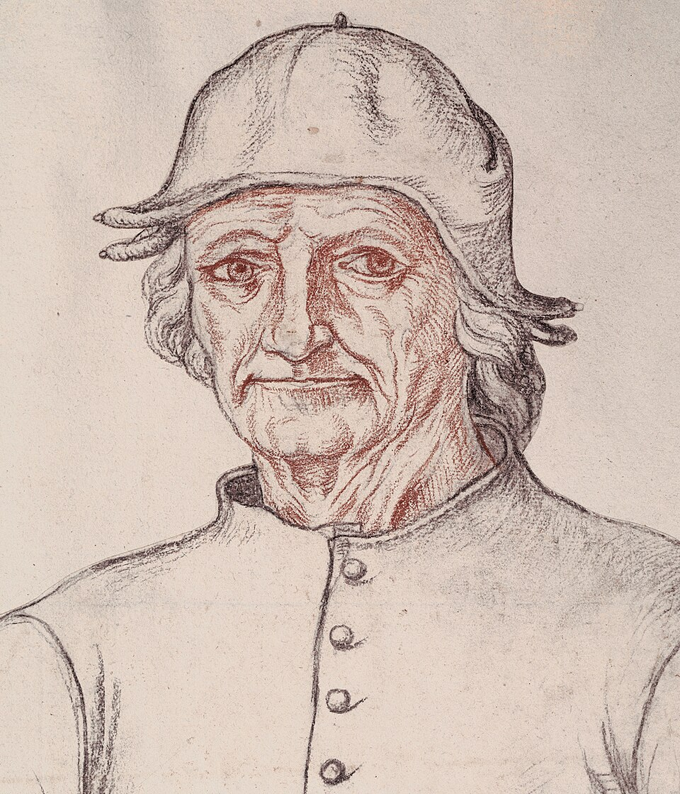
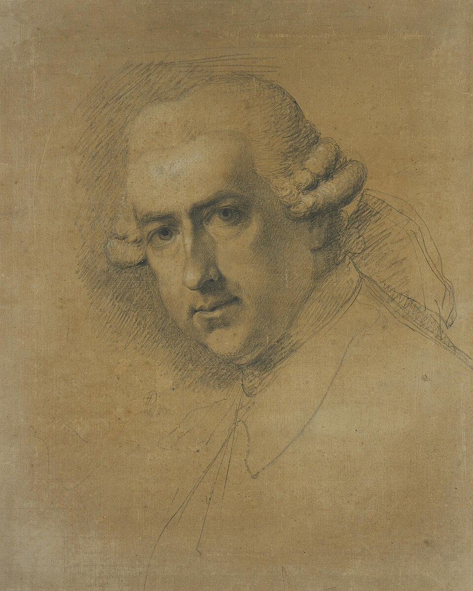

La colección
Autores
Solo los artistas de nombre propio, por orden de nacimiento. Los relieves, las tablillas y los mosaicos anónimos no aparecen aquí: fingir una autoría sería peor que decir que no la hay.
Exequiasactivo c. 550–525 a.C. · 2 obrasEufronioactivo c. 520–470 a.C. · 1 obra Andréi Rubliovc. 1360–1430 · 1 obra
Andréi Rubliovc. 1360–1430 · 1 obra Masaccio1401–c. 1428 · 1 obra
Masaccio1401–c. 1428 · 1 obra Giovanni Bellinic. 1427–1516 · 1 obra
Giovanni Bellinic. 1427–1516 · 1 obra Alberto Durero1471–1528 · 1 obra
Alberto Durero1471–1528 · 1 obra Lucas Cranach el Viejo1472–1553 · 2 obras
Lucas Cranach el Viejo1472–1553 · 2 obras Miguel Ángel Buonarroti1475–1564 · 4 obras
Miguel Ángel Buonarroti1475–1564 · 4 obras Tiziano Vecellioc. 1488–1576 · 1 obraJörg Breu el Jovenc. 1510–1547 · 1 obra
Tiziano Vecellioc. 1488–1576 · 1 obraJörg Breu el Jovenc. 1510–1547 · 1 obra Pieter Bruegel el Viejoc. 1525–1569 · 1 obra
Pieter Bruegel el Viejoc. 1525–1569 · 1 obra Kamāl ud-Dīn Behzadm. c. 1535 · 1 obra
Kamāl ud-Dīn Behzadm. c. 1535 · 1 obra Caravaggio1571–1610 · 1 obra
Caravaggio1571–1610 · 1 obra Peter Paul Rubens1577–1640 · 4 obras
Peter Paul Rubens1577–1640 · 4 obras José de Ribera1591–1652 · 2 obras
José de Ribera1591–1652 · 2 obras Nicolas Poussin1594–1665 · 3 obras
Nicolas Poussin1594–1665 · 3 obras Antoon van Dyck1599–1641 · 1 obra
Antoon van Dyck1599–1641 · 1 obra Diego Velázquez1599–1660 · 1 obra
Diego Velázquez1599–1660 · 1 obra Rembrandt van Rijn1606–1669 · 4 obrasCristóbal de Villalpandoc. 1649–1714 · 1 obra
Rembrandt van Rijn1606–1669 · 4 obrasCristóbal de Villalpandoc. 1649–1714 · 1 obra François Lemoyne1688–1737 · 1 obra
François Lemoyne1688–1737 · 1 obra Giambattista Tiepolo1696–1770 · 1 obra
Giambattista Tiepolo1696–1770 · 1 obra Giandomenico Tiepolo1727–1804 · 1 obra
Giandomenico Tiepolo1727–1804 · 1 obra Jacques-Louis David1748–1825 · 3 obras
Jacques-Louis David1748–1825 · 3 obras William Blake1757–1827 · 2 obras
William Blake1757–1827 · 2 obras Carle Vernet1758–1836 · 1 obra
Carle Vernet1758–1836 · 1 obra J. M. W. Turner1775–1851 · 1 obra
J. M. W. Turner1775–1851 · 1 obra Jean-Auguste-Dominique Ingres1780–1867 · 1 obra
Jean-Auguste-Dominique Ingres1780–1867 · 1 obra John Martin1789–1854 · 1 obra
John Martin1789–1854 · 1 obra Francis Danby1793–1861 · 1 obra
Francis Danby1793–1861 · 1 obra Camille Corot1796–1875 · 1 obra
Camille Corot1796–1875 · 1 obra Eugène Delacroix1798–1863 · 1 obra
Eugène Delacroix1798–1863 · 1 obra Thomas Cole1801–1848 · 1 obra
Thomas Cole1801–1848 · 1 obra Aleksandr Ivánov1806–1858 · 1 obra
Aleksandr Ivánov1806–1858 · 1 obra George Frederic Watts1817–1904 · 1 obra
George Frederic Watts1817–1904 · 1 obra William Bouguereau1825–1905 · 1 obra
William Bouguereau1825–1905 · 1 obra Gustave Doré1832–1883 · 1 obra
Gustave Doré1832–1883 · 1 obra Fernand Cormon1845–1924 · 1 obra
Fernand Cormon1845–1924 · 1 obra Paul Gauguin1848–1903 · 1 obra
Paul Gauguin1848–1903 · 1 obra Franz von Matsch1861–1942 · 1 obraAgesandro, Polidoro y Atenodoroactivos c. siglo I a.C. · 1 obraMarianos y su hijo Haninaactivos s. VI · 1 obra
Franz von Matsch1861–1942 · 1 obraAgesandro, Polidoro y Atenodoroactivos c. siglo I a.C. · 1 obraMarianos y su hijo Haninaactivos s. VI · 1 obra
Andréi Rubliovc. 1360–1430 · 1 obraMasaccio1401–c. 1428 · 1 obraGiovanni Bellinic. 1427–1516 · 1 obra
El Boscoc. 1450–1516 · 1 obraAlberto Durero1471–1528 · 1 obraLucas Cranach el Viejo1472–1553 · 2 obrasMiguel Ángel Buonarroti1475–1564 · 4 obrasTiziano Vecellioc. 1488–1576 · 1 obraJörg Breu el Jovenc. 1510–1547 · 1 obraPieter Bruegel el Viejoc. 1525–1569 · 1 obraKamāl ud-Dīn Behzadm. c. 1535 · 1 obraCaravaggio1571–1610 · 1 obraPeter Paul Rubens1577–1640 · 4 obrasJosé de Ribera1591–1652 · 2 obrasNicolas Poussin1594–1665 · 3 obrasAntoon van Dyck1599–1641 · 1 obraDiego Velázquez1599–1660 · 1 obraRembrandt van Rijn1606–1669 · 4 obrasCristóbal de Villalpandoc. 1649–1714 · 1 obraFrançois Lemoyne1688–1737 · 1 obraGiambattista Tiepolo1696–1770 · 1 obra
Gavin Hamilton1723–1798 · 1 obraGiandomenico Tiepolo1727–1804 · 1 obraJacques-Louis David1748–1825 · 3 obrasWilliam Blake1757–1827 · 2 obrasCarle Vernet1758–1836 · 1 obraJ. M. W. Turner1775–1851 · 1 obraJean-Auguste-Dominique Ingres1780–1867 · 1 obraJohn Martin1789–1854 · 1 obraFrancis Danby1793–1861 · 1 obraCamille Corot1796–1875 · 1 obraEugène Delacroix1798–1863 · 1 obraThomas Cole1801–1848 · 1 obraAleksandr Ivánov1806–1858 · 1 obraGeorge Frederic Watts1817–1904 · 1 obraWilliam Bouguereau1825–1905 · 1 obraGustave Doré1832–1883 · 1 obraFernand Cormon1845–1924 · 1 obraPaul Gauguin1848–1903 · 1 obraFranz von Matsch1861–1942 · 1 obraAgesandro, Polidoro y Atenodoroactivos c. siglo I a.C. · 1 obraMarianos y su hijo Haninaactivos s. VI · 1 obra